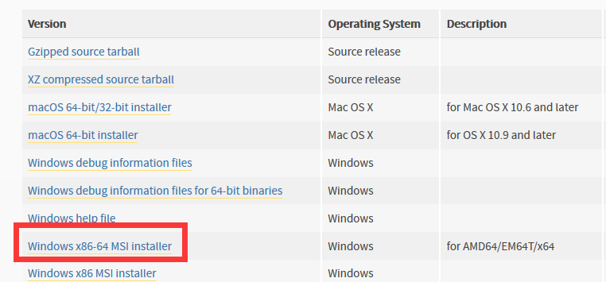

原文出处:本文由博客园博主煮酒论天下提供。
原文连接:https://www.cnblogs.com/xiangdongBig1/p/11312319.html
原文连接:https://www.cnblogs.com/xiangdongBig1/p/11312319.html
Windows系统下同时安装Python2和Python3
- 说明
有时由于工作需求我们需要在Python2版本下面进行一些开发，有时又需要Python3以上的版本，那么我们怎么在一台电脑上同时安装多个Python版本呢？
- 下载
两个版本的Python可以在官网上下载：https://www.python.org/downloads/，选择适合的版本。

- 安装
Python3会自动添加环境变量，选择安装位置，然后一直Next（图CSDN Daibi_L）
Python2需要添加环境变量，选择安装位置，然后，一直Next。（图CSDN Daibi_L）
添加环境变量
- 测试安装
但是，这样直接安装会产生版本冲突，需要重命名，将Python2文件夹下的python.exe和pythonw.exe改名为python2.exe和pythonw2.exe
Python3也进行同样的修改。
在cmd中查看用命令 ：python2和python3
安装成功！
接下来安装pip命令，之前的重命名是的pip命令报错。
使用命令 ：python2 -m pip install --upgrade pip --force-reinstall和python3 -m pip install --upgrade pip --force-reinstall

最后检查是否安装成功：pip2 --version和pip3 --version